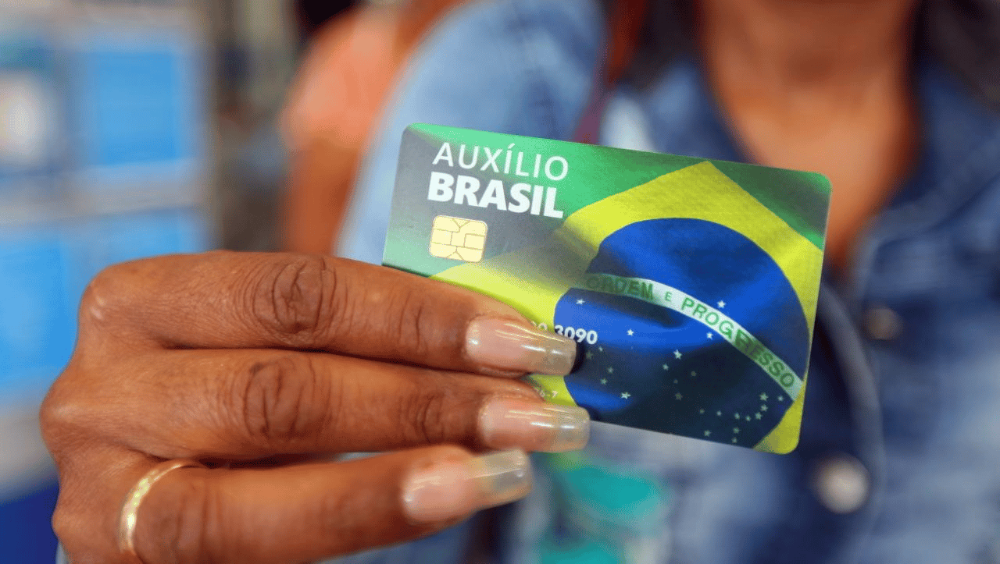
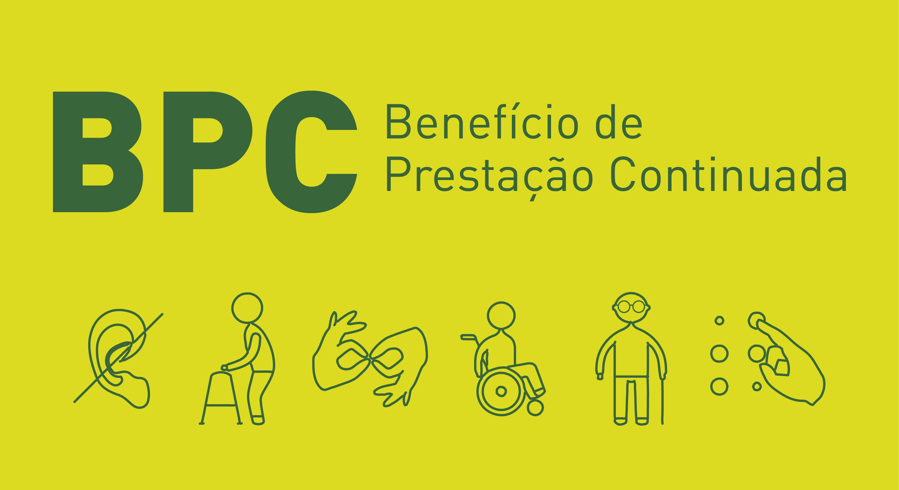
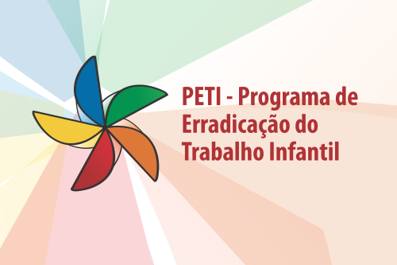
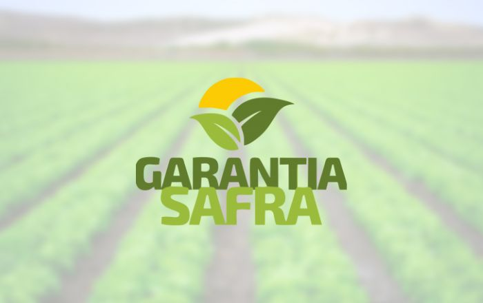
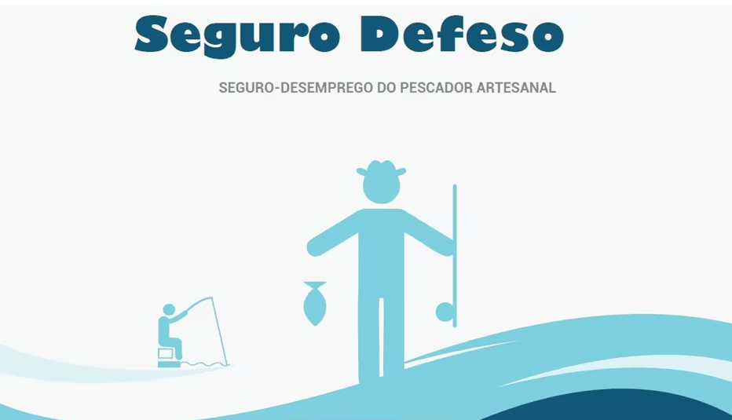

Auxílio Brasil
O que é:
Ele é conhecido como o novo auxílio do governo por ser o mais recente. Trata-se do substituto do
Bolsa Família, o programa de transferência de renda a famílias em situação de pobreza e de extrema
pobreza.
O valor de R$ 200,00 é depositado mensalmente para quem se enquadra nos critérios de recebimento.

Quem tem direito:
Como solicitar:
A família precisa estar inscrita no Cadastro Único para Programas Sociais do Governo Federal/CadÚnico
(através do link: CadÚnico/gov.br) e com os dados cadastrais atualizados. Todos os meses o
Ministério da Cidadania inclui novas famílias para receber o benefício, pago por meio da Caixa
Econômica Federal.
Benefício da Prestação Continuada (BPC)
O que é:
É um benefício que concede um salário mínimo mensal a idosos com 65 anos de idade ou mais e a pessoas
com deficiência de qualquer idade – além de descontos na tarifa de energia elétrica. Esse auxílio do
governo não é uma aposentadoria e está previsto na Lei Orgânica de Assistência Social (LOAS).
Os beneficiários não precisam ter contribuído com o INSS e, além disso, não recebem 13º salário nem
deixam pensão por morte.

Quem tem direito:
Como solicitar:
A pessoa e a família precisam estar inscritas no CadÚnico (através do link: CadÚnico/gov.br). Após a inscrição, é preciso entrar em contato com o INSS
ou Agências da Previdência Social (através do link: Canais_Atendimento/gov.br) para a solicitação do BPC.
Programa de Erradicação do Trabalho Infantil (PETI)
O que é:
É um auxílio do governo pago mensalmente a famílias de baixa renda que tenham menores de 16 anos em
situação de trabalho infantil. Para municípios com menos de 250 mil habitantes, são pagos R$ 25,00
por criança e para municípios maiores de 250 mil habitantes são pagos R$ 40,00 por criança.

Quem tem direito:
Como solicitar:
Por meio da inscrição ao programa no CadÚnico (através do link: CadÚnico/gov.br). Após a aprovação, o valor é pago mensalmente pela Caixa
Econômica Federal. Para saber mais acesse: PETI/gov.br
Garantia-Safra (GS)
O que é:
É um auxílio do governo destinado a agricultores familiares de municípios sujeitos a grandes perdas
de safra por causa de estiagem ou excesso de chuvas.
Quando o agricultor estiver apto a receber o benefício, o pagamento é feito quando o município
comprovar que houve pelo menos 50% de perda do conjunto das produções. Para os anos de 2022 e 2023,
o pagamento do auxílio foi fixado em 1.200,00 R$.

Quem tem direito:
Como solicitar:
para se inscrever pela primeira vez, é preciso se cadastrar nas instituições emissoras da DAP
(Declaração de Aptidão ao Pronaf). Saiba mais em: dap/gov.br
Seguro Defeso do Pescador Artesanal
O que é:
É um auxílio do governo no valor de um salário mínimo concedido a pescadores artesanais para que eles
tenham renda durante o período do defeso, ou seja, quando não puderem realizar as atividades
pesqueiras devido à piracema (período de reprodução dos peixes).

Quem tem direito:
Como solicitar:
A solicitação deve ser feita diretamente no site do INSS (através do link: solicitar-seguro-defeso-pescador-artesanal/gov.br) ou pelo aplicativo "Meu
INSS". O prazo é de 30 dias antes do início do período do defeso e termina no último dia do
período.